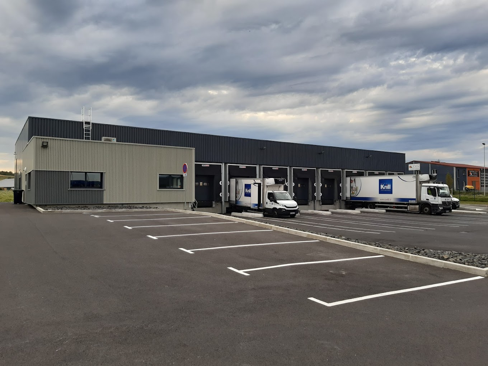
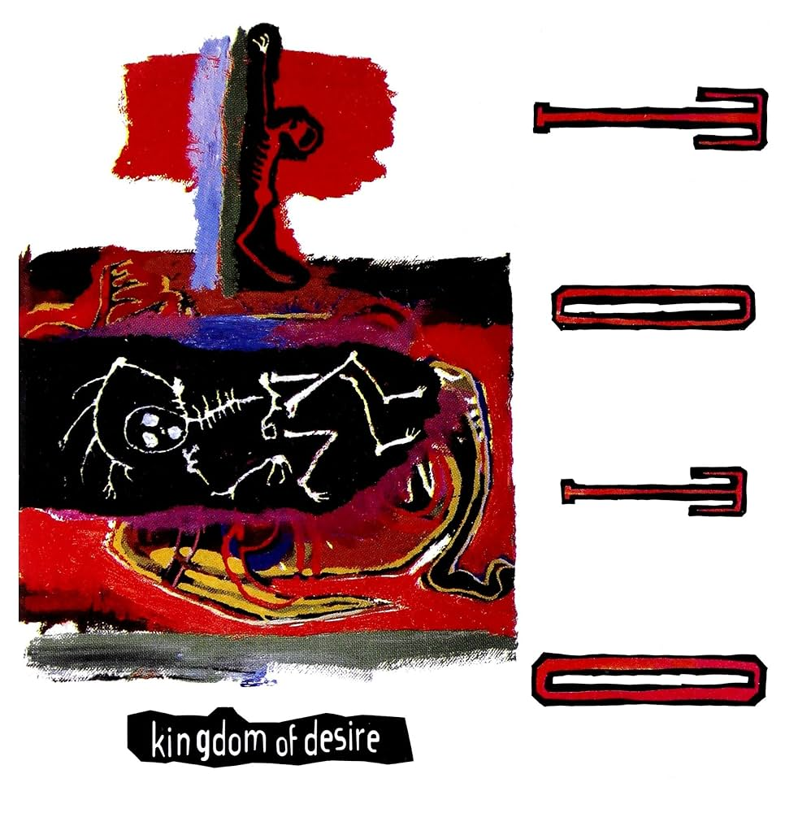

CV

J'ai 18 ans et je suis actuellement en première année de Bachelor Universitaire de Technologie (BUT) Réseaux et Télécommunications à Aubière (63).
J'ai choisi ces études grâce au stage que j'ai pu faire à l'UTT (Université de Technologie de Troyes) où j'ai pu voir les bases des réseaux et manipuler différents appareils.
En groupe, nous avons configuré des switches pour permettre des parties de jeu en réseau local sur le jeu Teeworlds. Les explications des étudiants et la finalité du projet proposé
m'ont fait comprendre que le réseau était la voie que je souhaitais emprunter.
Je suis actuellement à la recherche d'un stage dans le domaine des réseaux, des télécommunications et de la cybersécurité d'une durée de 2 mois à compter de mars 2025.
Septembre 2023 : Entrée en BUT Réseaux et Télécommunications à Aubière (63). Durant cette formation de 3 ans, sont prévues l'exploration de domaines divers et variés tels que les réseaux, la programmation et les télécommunications.
Juin 2023 : Obtention du Baccalauréat général mention Bien au lycée Simone Weil au Puy-en-Velay (43) avec les spécialités Mathématiques et Numérique et Science de l'Informatique.

Pendant 1 mois, j'ai été engagé par la société Gel 43 située à Saint-Germain-Laprade (43) en tant que préparateur de commandes.
Mon travail consistait à préparer les commandes de surgelés de restaurants ou d'entités publiques telles que des hôpitaux dans une chambre froide pour permettre une livraison le lendemain.
J'ai pu découvrir le monde du travail et apprendre le travail d'équipe avec des collègues et des supérieurs très avenants et compréhensifs.
J'ai été invité à revenir l'année suivante si je le souhaitais.
En terminale, notre professeur d'informatique nous a proposé de participer aux Cordées de la réussite avec l'école d'ingénieur de l'ISIMA à Clermont-Ferrand (63) et le collège Jules Vallès du Puy-en-Velay (43) pour présenter les formations ainsi que des notions d'informatique aux collégiens et aux élèves de seconde du lycée.
Avec un camarade, nous avons choisi de présenter les graphes et leur utilisation en informatique, plus particulièrement sur les automates.
Le nombre de personnes ayant rejoint la spécialité Informatique cette année étant plus élevé que les années précédentes, ces interventions ont donc été un succès.
Configuration réseau :
Lors de nombreux TD et TP, j'ai pu me familiariser avec l'utilisation et la configuration des différents appareils utilisés
dans un réseau.
L'utilisation du logiciel Cisco Packet Tracer m'a été très utile pour apprendre les différentes facettes des réseaux comme par
exemple les protocoles (tels que DHCP, HTTP, Ethernet), l'adressage ou la configuration poussée de routeur ou de switches.
Python :
Durant mes années de lycée, j'ai pu m'initier à la programmation sur le langage Python. Les nombreux TD et TP dans le BUT m'ont permis de consolider ces connaissances et de m'améliorer dans la méthode de programmation.
100%Commandes Linux :
Grâce à des TP et des TD, j'ai pu apprendre les différentes commandes utiles pour utiliser le système d'exploitation Linux, de plus j'ai pu apprendre le langage Bash permettant de faire des scripts et d'automatiser certaines tâches sur Linux.
80%HTML/CSS :
Les TD et le projet concernant ce portfolio m'ont permis d'apprendre le développement WEB avec les langages HTML et CSS.
70%
- Discrétion
Je parviens à rester discret dans la vie de tous les jours sans que cela n'affecte ma capacité de travail. En effet,
j'arrive à garder des informations importantes et à ne pas me faire remarquer quand cela n'est pas nécessaire.
Selon moi, cette qualité est importante dans le domaine de la cybersécurité pour que les données cruciales ne soient
pas dévoilées.
- Curiosité
Je m'intéresse à beaucoup de sujets différents, je suis capable de faire des recherches sur un sujet pendant plusieurs
heures à cause d'un simple article, d'une vidéo ou d'un film. De plus, si un sujet m'intéresse beaucoup, je vais faire
beaucoup de recherches pour être le plus au point sur ce dit sujet.
Cela me permet d'être très polyvalent dans les domaines où je possède des connaissances.
- Autodidacte
Grâce à ma curiosité, j'ai pu apprendre par moi-même des connaissances théoriques et techniques. Je suis donc capable
de m'atteler à des tâches complexes en pleine autonomie.
- Travailleur
Depuis mon plus jeune âge, j'ai toujours travaillé dur pour avoir les meilleurs résultats possibles. Chaque tâche qui
m'est donnée est effectuée jusqu'au bout.
- Anglais : B2+
- Espagnol : A2
Depuis maintenant 10 ans, je pratique régulièrement la guitare avec un niveau académique de Cycle 2.
Je suis capable de jouer des morceaux très variés et j'apprécie particulièrement les choros brésiliens qui se caractérisent par
un rythme rapide et des tonalités joyeuses malgré leur nom qui signifie "pleurs". J'apprécie particulièrement Tico-Tico no Fubá de Zequinha de Abreu.
Le morceau que j'apprécie le plus jouer est Grand Vals de Francisco Tárrega.

En dehors de la guitare, j'apprécie aussi écouter tout type de musique, plus particulièrement le rock des années 1970 et 1980. La discographie du groupe Toto est celle que j'apprécie le plus, surtout l'album "Kingdom of Desire" avec les titres Jake to the Bone et Kingdom of Desire.
Avec la musique, le cinéma est aussi un art que j'apprécie beaucoup. Mes films favoris sont "Piège de cristal" réalisé
par John McTiernan, "Night Call" de Dan Gilroy, ainsi que le récent "Yannick" de Quentin Dupieux.
Ces trois films appartiennent à des genres très différents mais restent de grandes œuvres. La mise en scène et
les mouvements de caméra du premier "Die Hard" ont permis de redéfinir le genre jusqu'à la sortie de "Die Hard 3" qui, là aussi,
redéfinira les codes établis par "Piège de Cristal".
"Night Call" ou "Nightcrawler" dans sa version originale est un thriller très prenant racontant l'histoire de Lou qui parcourt
la ville de Los Angeles à la recherche d'images choc à vendre à des chaînes de télévision. J'apprécie particulièrement
le jeu de Jake Gyllenhaal dans le rôle de Lou, qui veut trouver des images de plus en plus graphiques et qui s'enfonce dans ce travail
quitte à ne plus avoir de morale.
Enfin, "Yannick" est une comédie qui possède des personnages très bien écrits et bien joués, notamment Yannick joué par Raphaël Quenard
qui s'ennuie devant une pièce de théâtre et décide de l'arrêter. S'ensuivent des péripéties où Yannick décide de réécrire la pièce
pour la rendre mieux lui et là fait joué par les comédiens.
Depuis 3 ans maintenant, je fais du tennis. Tout d'abord au club de Saint-André-Les-Vergers (10) puis dans celui de Brives-Charensac (43). Je n'ai jamais fais de compétition car ce n'est pas ce que je recherchais en faisant du sport.
Téléphone : 07 69 77 77 92
Mail : robin.bouvier@etu.uca.fr
 Github : https://github.com/RobinBouvier
Github : https://github.com/RobinBouvier
 Linkedin : https://www.linkedin.com/in/robin-bouvier/
Linkedin : https://www.linkedin.com/in/robin-bouvier/